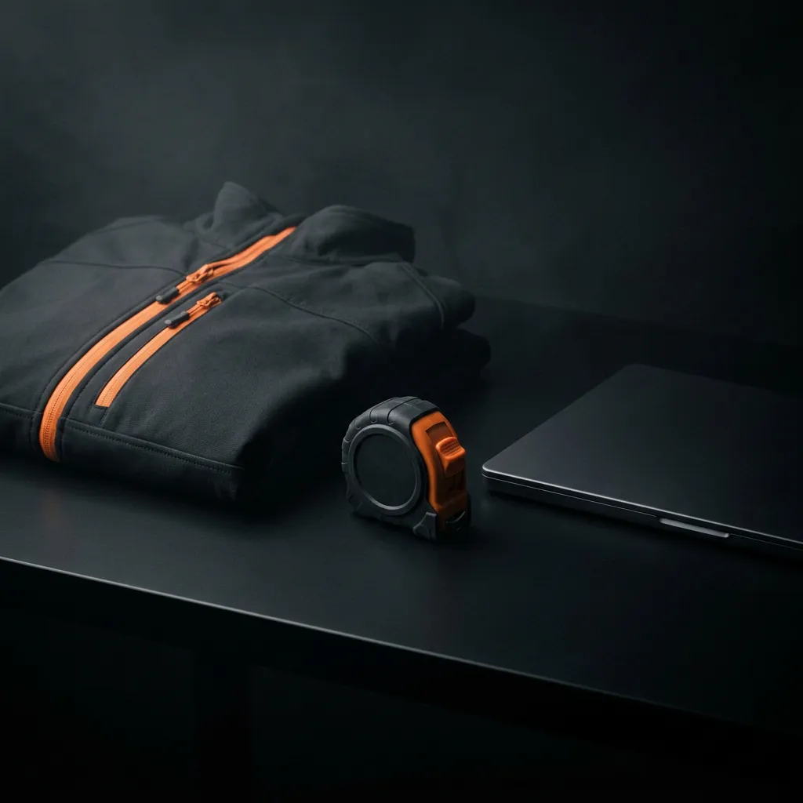

Marketing fürs Handwerk.
Website, Fahrzeug, Schilder, Social Media – alles aus einer Hand.
Damit dein Handwerksbetrieb sichtbar wird und die richtigen Kunden & Mitarbeiter dich finden.

Sichtbar werden –
bei Kunden und bei Fachkräften.
Gute Arbeit spricht sich rum – aber heute wird zuerst gegoogelt. Wer online nichts oder nur eine veraltete Seite findet, ist schnell beim nächsten Betrieb. Genau hier setzt Marketing fürs Handwerk an: ein professioneller, einheitlicher Auftritt, der zeigt, was du kannst – vom Fahrzeug über die Website bis zu Social Media.
Als Werbeagentur aus Weiden in der Oberpfalz übernehme ich das komplett für dich. Du bist Profi im Handwerk, nicht im Marketing – also kümmere ich mich um deinen Auftritt, während du auf der Baustelle bist. Ein Ansprechpartner, alles aus einer Hand, ohne Agentur-Overhead.
Marketing fürs Handwerk –
alles aus einer Hand.
Logo, Branding & Geschäftsausstattung
Logo, Visitenkarten, Anzeigen, Flyer und Plakate – ich gestalte deinen Auftritt so, dass er überall gleich aussieht und sofort wiedererkannt wird. Ein durchgängiges Erscheinungsbild statt Flickenteppich.
Website fürs Handwerk & Inhalte
Von der neuen Handwerker-Website über einzelne Landingpages bis zur laufenden Pflege – inklusive passender Texte und sauberer SEO-Grundlagen. Damit du online gefunden wirst und nicht nur „auch da" bist.
Fahrzeugbeschriftung, Schilder & Werbetechnik
Fahrzeugbeschriftung, Bauzaunbanner, Baustellenschilder und Fassadenwerbung – großformatige Werbung, die jeden Tag für dich arbeitet. Von der Gestaltung bis zur fertigen Montage über meine Werbetechnik-Partner.
Social-Media-Betreuung
Redaktionsplan, Posts, Reels und die laufende Betreuung deiner Kanäle bei Instagram, Facebook & Co. Du musst nicht selbst täglich posten – ich halte deinen Auftritt am Leben.
Mitarbeitergewinnung & Recruiting
Stellenanzeigen, die gelesen werden, Karriereseiten und eine Arbeitgebermarke, die zu dir passt. Damit du im Fachkräftemangel nicht nur Aufträge findest, sondern auch die richtigen Mitarbeiter.
Arbeitskleidung, Textil & Werbeartikel
Workwear mit Logo, Textildruck und Werbeartikel – dein Team tritt einheitlich auf und wird auf der Baustelle sofort als dein Betrieb erkannt. Auch das gehört zu einem stimmigen Auftritt.
Druck & Abwicklung
Druckdaten richtig anlegen, Druckerei und Werbetechnik koordinieren, Termine im Blick. Von der Visitenkarte bis zum Bauzaun bekommst du das fertige Ergebnis – nicht den Stress dazwischen.
Beratung & laufende Betreuung
Manchmal fehlt nicht die Umsetzung, sondern der Plan. Ich bringe Struktur in dein Marketing und bin der Ansprechpartner übers Jahr, der ehrlich sagt, was Sinn macht – und was nicht.
Deine Werbeagentur fürs Handwerk
in Weiden & der Oberpfalz.
Ob Elektro, Sanitär, Zimmerei, Maler, Dachdecker oder Bau – als Werbeagentur fürs Handwerk kümmere ich mich um deinen kompletten Auftritt. Von der Fahrzeugbeschriftung über Schilder, Bauzaunbanner und Arbeitskleidung bis zu Website und Social Media bekommst du Marketing fürs Handwerk aus einer Hand. Kein Agentur-Overhead, kein Abstimmungs-Pingpong – ein Ansprechpartner, der versteht, wie ein Handwerksbetrieb tickt.
Ich sitze in Irchenrieth bei Weiden in der Oberpfalz und arbeite für Handwerksbetriebe in der ganzen Region – von Weiden über Neustadt und Tirschenreuth bis Amberg. Auf Wunsch komme ich zu dir auf den Hof oder die Baustelle, vieles läuft aber auch unkompliziert digital. Über 20 Jahre Erfahrung sorgen dafür, dass dein Handwerk sichtbar wird – bei den richtigen Kunden und bei zukünftigen Mitarbeitern.
Marketing fürs Handwerk –
kurz & ehrlich erklärt.
Was kostet Marketing fürs Handwerk?
Das hängt davon ab, was du brauchst – ein einzelnes Schild ist etwas anderes als ein kompletter Auftritt mit Website und laufender Betreuung. Deshalb gibt es bei mir kein Paket von der Stange, sondern nach einem kurzen Gespräch eine ehrliche Einschätzung. Du weißt vorher, woran du bist.
Brauche ich als Handwerksbetrieb wirklich eine eigene Website?
Ja. Auch Empfehlungskunden googeln dich heute zuerst – wer nichts oder nur eine veraltete Seite findet, ist schnell wieder weg. Eine saubere, schnelle Website ist dein wichtigstes Aushängeschild, für Kunden genauso wie für Bewerber.
Hilft Marketing bei der Mitarbeitergewinnung im Handwerk?
Absolut – für viele Betriebe ist das inzwischen wichtiger als neue Aufträge. Mit einer klaren Arbeitgebermarke, guten Stellenanzeigen und echten Einblicken in deinen Betrieb findest du eher die richtigen Leute, statt in der Masse unterzugehen.
Was bringt eine Fahrzeugbeschriftung oder ein Bauzaunbanner wirklich?
Dein Fahrzeug steht jeden Tag stundenlang sichtbar an Baustellen und im Ort – das ist Dauerwerbung, die einmal kostet und jahrelang wirkt. Genauso der Bauzaun am Projekt: Wer sieht, wer da sauber arbeitet, fragt beim nächsten Mal dich.
Muss ich mich dann selbst um Social Media kümmern?
Nein – genau das ist der Punkt. Du bist auf der Baustelle, nicht am Handy. Auf Wunsch übernehme ich Planung, Gestaltung und Betreuung deiner Kanäle komplett; du lieferst nur ab und zu ein paar Fotos vom Projekt.
Arbeitest du auch für kleine Handwerksbetriebe in der Oberpfalz?
Klar. Vom Ein-Mann-Betrieb bis zur größeren Firma – gerade kleinere Betriebe profitieren enorm von einem professionellen Auftritt. Ich sitze in Weiden bzw. Irchenrieth und bin für die ganze Oberpfalz da, vor Ort oder digital.
Machen wir dein Handwerk sichtbar?
Erzähl mir kurz, wo's hakt – ich melde mich persönlich
und sage dir ehrlich, was für deinen Betrieb Sinn macht.